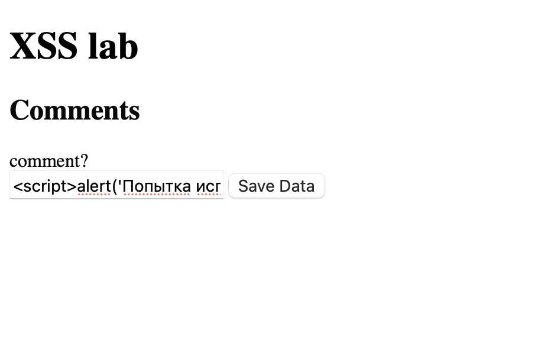
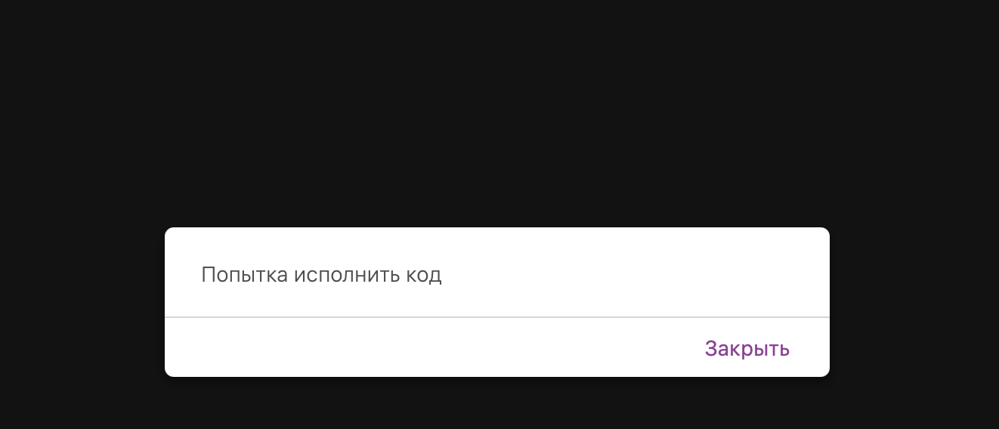

По данным National Vulnerability Database общее количество уязвимостей составляет 20140 за 2021 год. За период 2021-2024 общее количество CVE XSS составляет 11300.
Источники:
В компоненте для системы управления событиями и календарями PHP Event Calendar. Функционал календаря с возможностью создавать, редактировать, удалять события. Позволяет внедрить свой JS-код через параметр title в файле /server/ajax/events_manager.php . Далее скрипт будет отображаться и выполнятся в браузере каждого пользователя, зашедшего на зараженное событие.
Последствия:
Источник: https://vulners.com/cve/CVE-2021-42078
Система интернет-магазина, написанная на пхп. Функционал просмотра товаров, корзины, заказов и админка. Включает JSONP-эндпоинты для AJAX-запросов, поддержку редактирования записей и CAPTCHA-механизмы. Можно внедрить свой JS-код в URL параметры, который будет отображен в ответе от сервера и выполнится в браузере жертвы, при формировании спец. ссылки.
Последсвтия:
Источник: https://cve.mitre.org/cgi-bin/cvename.cgi?name=CVE-2021-39412
Запустил докер, нажал на XSS-1. В поле для коммента ввел alert('Попытка исполнить код ') .

Появилось окно

При обновлении оно так же поялвяется.
Ввод никак не валидируется и напрямую вставляется в хтмл как есть . Тип уязвимости - межсайтовая атака с использованием скрипотов (Reflected Cross-Site Scripting (XSS)) - подкатегория инъекций.
Последсвия:
Меры предотвращения: